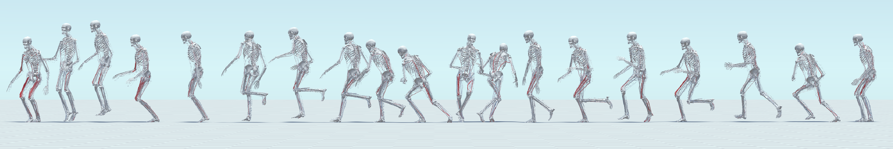

MuscleVAE: Model-Based Controllers of Muscle-Actuated Characters
Proc. ACM SIGGRAPH Asia 2023
Yusen Feng (1) Xiyan Xu
(2)
Libin Liu† (3)
(1) School of Computer Science, Peking University
(3) School of Electrionics Engineering and Computer Science, Peking University
(3) School of Intelligence Science and Technology, Peking University

|
Abstract
In this paper, we present a simulation and control framework for generating biomechanically plausible motion for muscle-actuated characters. We incorporate a fatigue dynamics model, the 3CC-r model, into the widely-adopted Hill-type muscle model to simulate the development and recovery of fatigue in muscles, which creates a natural evolution of motion style caused by the accumulation of fatigue from prolonged activities. To address the challenging problem of controlling a musculoskeletal system with high degrees of freedom, we propose a novel muscle-space control strategy based on PD control. Our simulation and control framework facilitates the training of a generative model for muscle-based motion control, which we refer to as MuscleVAE. By leveraging the variational autoencoders (VAEs), MuscleVAE is capable of learning a rich and flexible latent representation of skills from a large unstructured motion dataset, encoding not only motion features but also muscle control and fatigue properties. We demonstrate that the MuscleVAE model can be efficiently trained using a model-based approach, resulting in the production of high-fidelity motions and enabling a variety of downstream tasks.
|
|